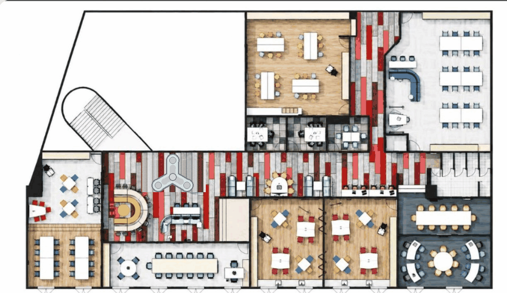

“El aula tradicional está obsoleta.
Es momento de algo nuevo.”
Prakash Nair
Catorce espacios de aprendizaje organizados según los cuatro elementos que dan nombre a las sociedades de Redwood, alineados a las 20 modalidades de Prakash Nair, a las habilidades ATL y al Perfil del IB. Una guía para diseñar la clase desde el cómo se aprende, no solo desde el qué.
Cómo leer esta guía: cuatro elementos, una forma de aprender
Redwood se organiza en cuatro sociedades que coinciden con los cuatro elementos clásicos: Ignis (fuego), Aqua (agua), Aer (aire) y Terra (tierra). El edificio habla ese mismo idioma: cada espacio pertenece a uno de ellos según lo que despierta en quien aprende. Un quinto, Aether, los reúne a todos en la sala de las maestras.
No se trata de dividir el territorio: las alumnas usan todos los espacios y cualquier maestra puede ocuparlos, sin importar la materia que imparta. El elemento es apenas una clave de lectura que enlaza arquitectura y aprendizaje. Cada tarjeta agrupa los de una misma familia; toca uno para abrir su ficha completa.
Sobre qué se sostiene la guía
Cinco referentes pedagógicos dan forma a los espacios. El principio que los une: los espacios se definen por la modalidad de aprendizaje, no por la materia. Cualquier maestra de cualquier asignatura puede usar cualquier espacio; lo que cambia es el cómo.
Las 20 modalidades de Nair
Toca una modalidad para ver en qué espacios es central o posible.El plano interactivo
Toca un espacio para abrir su ficha. Usa los filtros para resaltar en el plano dónde vive cada elemento, modalidad o materia.

Matriz de cobertura
Cruza espacios con modalidades o con materias. ● alto encaje (de diseño), ○ también posible. Toca un encabezado o una fila para resaltar; toca una celda para abrir la ficha.
¿Qué espacio necesito?
Elige qué quieres que hagan las alumnas y te sugiero los espacios con mejor encaje, ordenados, y los resalto en el plano.
Recorridos de aprendizaje
Ejemplos de cómo encadenar varios espacios en una misma secuencia didáctica. Toca un espacio para abrir su ficha.
Los 15 espacios
Toca cualquier espacio para ver su ficha completa: propósito, modalidades, ejemplos, habilidades del IB, soft skills y sugerencias para la maestra.